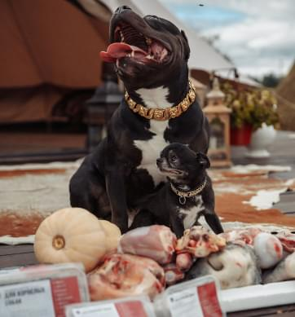
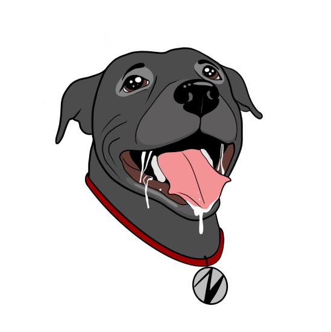
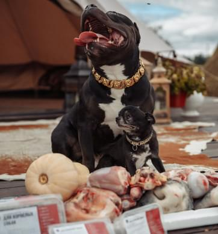
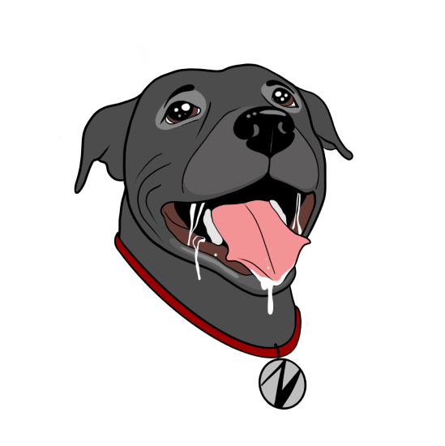

Питание, которое полюбит ваш хвостик
Натуральные рационы питания
для собак по системе BARF
Рационы ZOOOV
Система питания взрослой собаки не подойдет для щенка, поэтому мы создали разные по составу рационы ZOOOV. Вы сможете заказать полноценное питание исходя из возраста, веса и даже вкусовых предпочтений вашего друга. ZOOOV заботится о каждой собаке.
Рассчитаем в каком количестве нужно кормить вашего хвостика рационами Zooov
Почему ZOOOV
Натурально
Все продукты тщательно отбираем у проверенных поставщиков.
Здорово
Система питания, которая продлевает жизнь вашего хвостика.
Сбалансированно
Сделайте заказ на сайте и с вами свяжется наш менеджер для уточнения деталей.
Удобно
Достаточно разморозить порцию ZOOOV, удалить отрывную крышку с лотка и обед для вашего питомца готов.
  
  С заботой и любовь от Zooov
Мы сами владельцы собак и знаем, как важно правильное и качественное питание для долгой и счастливой жизни вашего питомца. Для нас ZOOOV это не просто бизнес, это наш вклад в повышение качества жизни всех собак.
Мы знаем, как правильно подобрать и переработать мясо, субпродукты, овощи и фрукты, чтобы питание вашего питомца было максимально сбалансированным и полезным.
Обычного сырого мяса из магазина будет недостаточно для полноценного питания собаки. ZOOOV — экономия времени, вам не придется искать необходимые составляющие для рациона.
Мы сами отбираем мясо, кости, легкие, печень и другие говяжьи, кроличьи и птичьи субпродукты у проверенных поставщиков. Закупаем органические овощи и используем разнообразные масла, такие как конопляное и льняное.
ZOOOV — это удобно, мы доставляем готовый рацион на две недели уже смешанным, расфасованным и упакованным в порционные лотки,готовыми к заморозке. За два часа до кормления достаточно переместить контейнер из морозилки в холодильник для ПРАВИЛЬНОЙ разморозки.
Как получить ZOOOV?
Натурально
Выберите рацион для своей собаки. Если не знаете сколько и какой – мы подскажем.
Подтвердите заказ
Мы свяжемся с вами для подтверждения заказа и уточнения деталей.
Ожидайте доставки
Привозим заказ на следующий день. По СПб – 350₽, при заказе от 3 500₽ – бесплатно. Лен. область – по договоренности.
Радуйте своего питомца
Просто разморозьте рацион: при комнатной температуре – 3 часа, в холодильнике – 12-15 часов.
Частые вопросы
У здоровых собак отличная иммунная система, готовая ко всем видам бактерий. Рацион BARF как раз укрепит иммунитет вашей собаки и защитит ее от влияния бактерий, которые находятся на улице или даже в вашем доме.
У здоровых собак отличная иммунная система, готовая ко всем видам бактерий. Рацион BARF как раз укрепит иммунитет вашей собаки и защитит ее от влияния бактерий, которые находятся на улице или даже в вашем доме.
У здоровых собак отличная иммунная система, готовая ко всем видам бактерий. Рацион BARF как раз укрепит иммунитет вашей собаки и защитит ее от влияния бактерий, которые находятся на улице или даже в вашем доме.
У здоровых собак отличная иммунная система, готовая ко всем видам бактерий. Рацион BARF как раз укрепит иммунитет вашей собаки и защитит ее от влияния бактерий, которые находятся на улице или даже в вашем доме.
У здоровых собак отличная иммунная система, готовая ко всем видам бактерий. Рацион BARF как раз укрепит иммунитет вашей собаки и защитит ее от влияния бактерий, которые находятся на улице или даже в вашем доме.
У здоровых собак отличная иммунная система, готовая ко всем видам бактерий. Рацион BARF как раз укрепит иммунитет вашей собаки и защитит ее от влияния бактерий, которые находятся на улице или даже в вашем доме.
У здоровых собак отличная иммунная система, готовая ко всем видам бактерий. Рацион BARF как раз укрепит иммунитет вашей собаки и защитит ее от влияния бактерий, которые находятся на улице или даже в вашем доме.
У здоровых собак отличная иммунная система, готовая ко всем видам бактерий. Рацион BARF как раз укрепит иммунитет вашей собаки и защитит ее от влияния бактерий, которые находятся на улице или даже в вашем доме.
У здоровых собак отличная иммунная система, готовая ко всем видам бактерий. Рацион BARF как раз укрепит иммунитет вашей собаки и защитит ее от влияния бактерий, которые находятся на улице или даже в вашем доме.